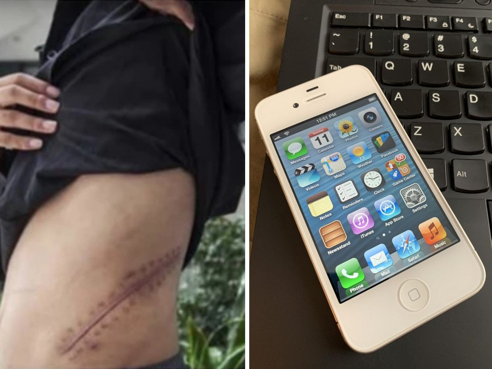
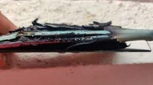

1) is it worth of buying iphone12 at this price?
2) do we need to sell kidney to buy iphone?
3) Can nord 2 explode?
4) does samsung M51 really has 7000mAh battery?
5) is Mi 11 Ultra camera good??
6) Does Realme 8 Pro have liquid cooling?
- is it worth of buying iphone12 at this price?
- do we need to sell kidney to buy iphone?
- Can nord 2 explode?
- really samsung M51 has 7000mAh battery?
- is Mi 11 Ultra camera good??
- Does Realme 8 Pro have liquid cooling?
That is a long review and we believe that if you are thinking of buying the iPhone 12 in India, it is worth reading. But in case, you are running short on time, and want a ready recommendation here we break down the review in 5 quick points. But before that a few words on the prices of the iPhone 12 in India. The price of the iPhone 12 starts at Rs 79,900. This is for the 64GB variant, which to be honest is on the lower side. This is what we said in the full review as well. It should have been 128GB. Unfortunately it is not. So, here is one more recommendation that we have: if you are buying the iPhone 12, step up to the 128GB variant. That will cost Rs 84,900. There is also the 256GB variant with a price of Rs 94,900 but that is too expensive. The sweet spot is the 128GB variant, if you need more storage.On to the iPhone 12 review then: In the full review of the iPhone 12, we called it the best premium phone for most people in India. And that is exactly what this phone is. It doesn’t have any glaring weakness. It gets almost everything right. It is fast, it looks great, it has got a good screen, a good set of cameras, fine battery life and good software. Overall, clean, cohesive and fast experience. It is worth Rs 79,900.
After Apple announced its latest iPhone series in October, the internet was flooded with memes and jokes. Among these memes, the meme that probably did rounds the most was which talked about selling your kidney to be able to purchase an iPhone.The kidney meme, however, is not new and went onto become an appalling reality for 25-year-old Chinese man Wang Shangkun. In 2011, the then 17-year old Shangkun, who comes from China's Anhui province, peddled his kidneys in exchange of $3,273 to purchase an iPad 2 and an iPhone 4. At the time, Shangkun was quoted as saying, "Why do I need two kidneys? One is enough."As he was very keen on owning Apple devices, he reverted to a message from a black market organ peddler on an online chatroom. In this chat, he told that he could earn over $3,000 by selling the organ.Soon after this conversation, the then 17-year old Wang underwent an illegal surgery in the Hunan province to remove his right kidney.Within a few months, he developed an infection in the remaining kidney owing to unhygienic operation location and the lack of post-operative care, according to a Vice report. His condition deteriorated and he is now bedridden due to a renal deficiency and requires regular dialysis.His mother grew suspicious when she saw him enter the home with expensive Apple devices and made him confess about the surgery. Following this, nine people were booked under charges of intentional injury and organ trading.
The news about smartphones involved in the explosion caused due to battery or any other external issue is rare, but isn't something that we haven't heard of. And, it was evident that the news would soon garner interest from smartphone enthusiasts, including the media, which started covering the incident without cross-checking.But, soon, the alleged claim turned out to be a hoax as the person deleted the tweets and his account from Twitter. Strange to say the least.To summarise, someone called out OnePlus India on Twitter claiming to be involved in a phone exploding event and later deleted the tweet and the account without offering any proof. Therefore, it can be termed as a stunt or a fake claim. In an emailed statement, OnePlus has now clarified that the alleged case was indeed false.
"We were notified on Twitter about an alleged blast case for the OnePlus Nord 2. We always take such claims very seriously and immediately look into each one to first verify the legitimacy of the claim. During our conversation with this individual, we were able to confirm that this alleged case was false and in no way involved any OnePlus product," the company said in a statement.
All OnePlus products undergo thorough quality and safety tests to ensure that they are up to leading industry standards and are safe to use. We also follow strict internal processes to ensure the health and safety of our users, while also protecting the reputation of our brand. We urge the public to exercise restraint in judging unverified allegations such as this," the company added.In a series of tweets, a user claimed that the Nord 2 he got for his father exploded on Tuesday. The Twitter user, who has now deleted the tweets and deactivated the account, used hashtags like #phonebomb and #OnePlusNord2 while tweeting about the incident. He added that his father is a government officer and that he's in trauma due to the incident. However, the biggest hint about this entire story not being true was in the lack of proof.India Today Tech was briefed about the company's investigation, and the details are interesting. First, we were told that the user wasn't clear about many things around the explosion that he claimed involved Nord 2. Later, the user told the company that the device in question wasn't a OnePlus device.
Samsung Galaxy F62 with 7,000 mAh battery announced. The latest addition to Samsung's Galaxy F series is here with the Galaxy F62. It packs a humongous 7,000mAh battery making it the second device in Samsung's lineup to sport a battery this big after the Galaxy M51.
Image result for does mi 11 ultra has 108mp camera With a DXOMARK Camera overall score of 143, the Xiaomi Mi 11 Ultra delivers the best test results we have seen for a smartphone camera to date and takes the top spot in the ranking. It also achieves new high scores for the Photo and Video sub-rankings, and comes in a close second for Zoom
Image result for realme 8 pro good The Realme 8 Pro is equipped with a copper liquid cooling system and runs on Android 11-based Realme UI 2.0 out of the box. It measures 160.6 × 73.9 × 7.99 mm and weighs 177 grams.